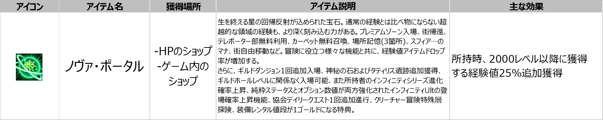

更新日:
特殊ルール
◼️ 2000レベルから新しいレベルシステムが反映され、2000レベルを達成したキャラクターは2000レベル以下の狩場では経験値を獲得することができません。
◼️ 又、2000レベル以下のキャラクターが2000レベル以降の狩り場で経験値を獲得することは不可能です。

エフェクト
◼️2000レベルに達成すると、転生エフェクトの代わりに、新規のエフェクトが追加されます。
◼️エフェクトはシステムオペレーションでOFFにすることが可能です。
オムニスキルポイントのゲージ
◼️狩りで取得される経験値に既存スキルポイントは含まれません。
◼️新規スキルポイント、オムニスキルポイントのゲージにのみ反映されます。
◼️レベルUP時、ステータスポイントと新規スキルポイント(10％上昇のたびに1ポイント)が獲得されます。
◼️レベル比例ステータス増加オプションの場合、最大レベル2000と上限が反映され、レベルUPしてもこれ以上、上昇しません。
◼️例)－2000レベル基準: レベル2UPに当たり、健康1ポイント増加オプション>増加される健康ポイント: 1000
－2002レベル基準: レベル2UPに当たり、健康1ポイント増加オプション>増加される健康ポイント: 1000、増加ポイントなし
◼️＞着用装備のレベル増加オプションはキャラクターレベルの合計が2000レベルと上限が反映されます。
◼️例) 1999レベル＋装備帝王バッジ(＋200レベル)＝装備着用可能レベルが2000レベルとなります。
2000レベル以上の追加経験値の獲得方法
※2000レベル以降、経験値の増加効果が得られないアイテムは関連ツールチップが追加されました。
※新規追加されたアイテム、「ノヴァ・ポータル」と「悪魔狩りの案配」以外のポータル系アイテムは
2000レベル以降の経験値アップ効果が適用されません。
2000レベル以降パーティー全員のレベル差によるペナルティー
－パーティープレイ時、(パーティー員の中の最高レベル)－(経験値獲得者のレベル)
2000レベル以降のギルド旗バフスキル
2000レベル以降のギルド旗バフスキルが追加されます。2000レベル以降のデスペナ
2000レベル以降、既存の経験値増加アイテムは使用不可となり、使用可能な有料アイテム3種類が新しく追加されます。
ノヴァ・ポータル

既存のスフィアアイテムと同様で、所持時2000レベル以降の経験値獲得に25％追加経験値が獲得されます。
※2000レベル未満のキャラクターは使用できません。
※アカウント内の他のキャラクターとは共有されません
課金アイテム【悪魔狩りの案配1490GEM】
◼️悪魔狩りの案配を使用すると、獲得経験値量が15倍増加します。
◼️案配は経験値を取得するたびに消耗され、獲得する経験値量が多いほど早く消耗されます。
◼️悪魔狩りの案配はキャラクター単位で適用され、アカウント内の他のキャラクターとは共有されません。
◼️悪魔狩りの案配はチャージ型アイテムとして、使用後にチャージすることが可能です。
※悪魔狩りの案配の使用量が50％の際に1つのアイテムを追加チャージすると、
チャージされた個数に合算され「ｘ２」と表記されます。使用中の案配アイテムの％は維持されます。
◼️クエスト報酬には影響がなく、狩りの際に獲得される経験値にのみ適用されます。
◼️スフィアアイテムのバフ、スターベリーアイテムと重複で使用可能です。
スターベリ【1日1回デイリー】
 ヤシの木から入り【ヒューニティ】と話して【スターベリー】をもらう。
ヤシの木から入り【ヒューニティ】と話して【スターベリー】をもらう。

スターベリー
◼️スターベリーアイテムは、デイリークエストを通じて手に入ります。
◼️獲得したスターベリーアイテムは毎日午前6時に削除され、効果が初期化します。
◼️2000レベル以上のキャラクター専用の果実アイテムとして、使用すると経験値10倍、ブラッドバーンインクのドロップ率が25倍増加します。
◼️スフィアアイテムのバフ、悪魔狩りの案配アイテムと重複で使用可能です。
◼️クエストの報酬には影響がなく、狩り経験値にのみ適用されます。
新規強化の財貨情報
◼️既存の異界の強化石と同様に、ブラックファイヤー外郭のNPCネルバを通じてエンチャントが可能です。
※異界の強化の前にクエスト「反撃の始まり」が完了した状態でのみエンチャントが可能です。
◼️新規異界の強化石をエンチャントの際、登場するオプションは既存の異界の強化オプションより高い数値で設定されております。
新規の異界の強化石をエンチャントする際に登場する新規オプションが6種類追加されます。
新規オプションが6種類
新規異界の強化石を使ってクリーチャーを強化する場合、経験値「260」とクリーチャー成長促進の秘薬3個が消耗されます。